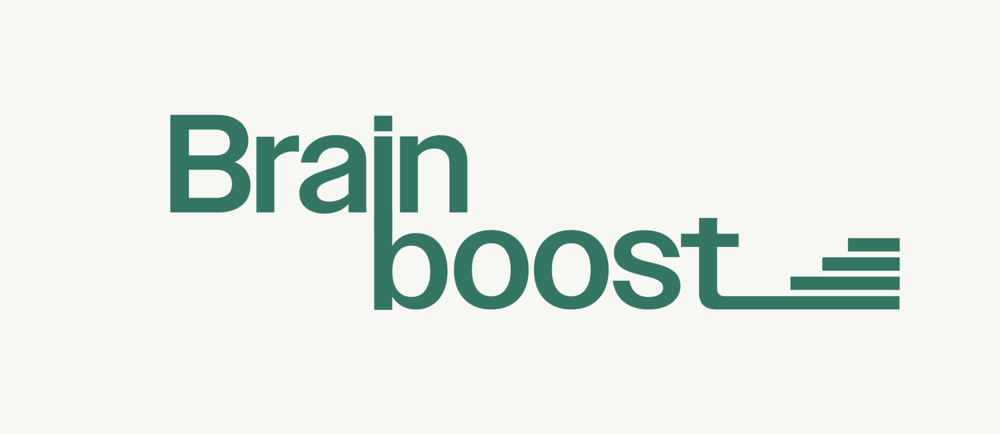
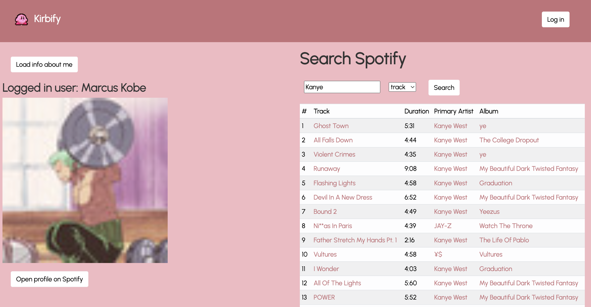

hey, my name is Marcus Kobe Herrera
A newly grad Software Engineer from UCI looking to create responsive websites and mobile applications that lead to sucess.
Projects
PlayPath
PlayPath is a marketplace for buyers and sellers to aquire sealed trading cards a more affordable rates. I worked as an intern here and helped create a lot of the functionality on the front end side.

BrainBoost
This is a student learning dashboard for the company Prenostik that takes in student data to help them with graduation rates.

Kirby's Journal
Kirby's Journal is a journaling website that takes advantage of your devices camera and recognizes certain hand gestures to specific actions on the website such as creating new journal entries.

Kirby's Spotify Search
Kirbify communicates with the Spotify API and make HTTP requests to the backend server to trigger API calls. Kirbify supports searching for artists, albums, and tracks and navigating between the three resources.